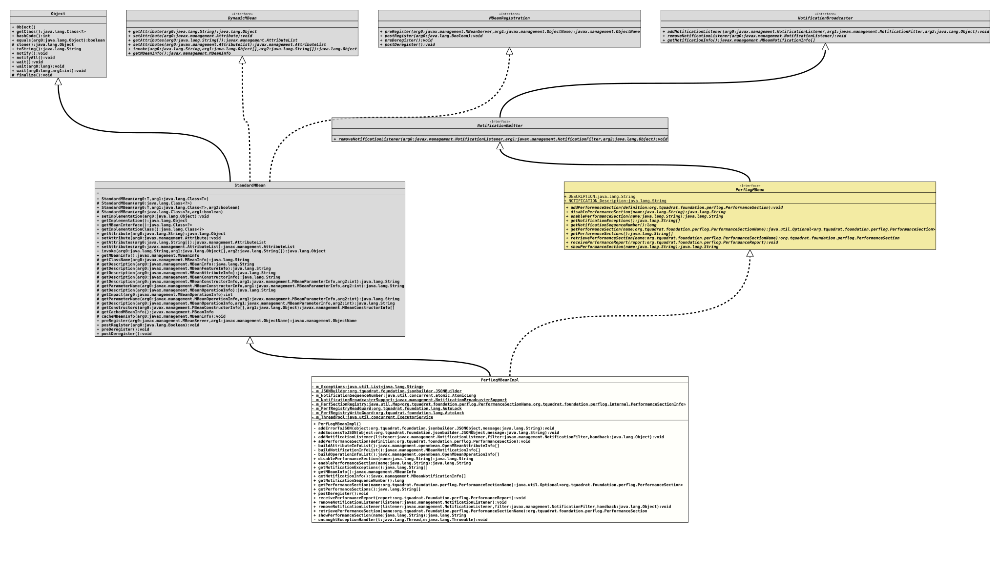

Class PerfLogMBeanImpl
- All Implemented Interfaces:
DynamicMBean, MBeanRegistration, NotificationBroadcaster, NotificationEmitter, PerfLogMBean
The implementation of the interface
PerfLogMBean.
- Author:
- Thomas Thrien (thomas.thrien@tquadrat.org)
- Version:
- $Id: PerfLogMBeanImpl.java 1216 2026-05-02 11:16:24Z tquadrat $
- Since:
- 0.25.0
- UML Diagram
-

UML Diagram for "org.tquadrat.foundation.perflog.internal.PerfLogMBeanImpl"
{kind=link}
-
Field Summary
FieldsModifier and TypeFieldDescriptionThe last 10 exceptions that caused notification threads to abort.private final JSONBuilderThe instance ofJSONBuilderused by this MBean.private final NotificationBroadcasterSupportThe implementation ofNotificationEmitterthat is utilised by this MBean instance.private final AtomicLongThe sequence number for the notifications.private final AutoLockThe guard for read operations on the performance section registry.private final AutoLockThe guard for write operations on the performance section registry.private final Map<PerformanceSectionName, PerformanceSectionInfo> The registry for the performance section info instances.private final ExecutorServiceThe thread pool that is used to send the notifications.Fields inherited from interface PerfLogMBean
DESCRIPTION, NOTIFICATION_Description -
Constructor Summary
Constructors -
Method Summary
Modifier and TypeMethodDescriptionprivate final voidaddErrorToJSON(JSONObject object, String message) Adds an error message to the givenJSONObject.final voidaddNotificationListener(NotificationListener listener, NotificationFilter filter, Object handback) final voidaddPerformanceSection(PerformanceSection definition) Adds the definition for a performance section.private final voidaddSuccessToJSON(JSONObject object, String message) Adds a success message to the givenJSONObject.private final OpenMBeanAttributeInfo[]Builds the attribute info list forgetMBeanInfo().private final MBeanNotificationInfo[]Builds the notifications info list forgetMBeanInfo().private final OpenMBeanOperationInfo[]Builds the operation info list forgetMBeanInfo().Disables the performance section.Enables the performance section.final MBeanInfoGet theMBeanInfofor this MBean.final String[]Returns the exceptions that caused a notification thread to abort.final MBeanNotificationInfo[]final longReturns the notification sequence number.final Optional<PerformanceSection> Returns the performance section specified by the given name.final String[]Returns a list of the currently defined performance sections.final voidfinal voidTakes the performance report and transfers it further.final voidfinal voidremoveNotificationListener(NotificationListener listener, NotificationFilter filter, Object handback) final PerformanceSectionRetrieves the performance section for the given name.final StringshowPerformanceSection(String name) Shows the performance section status.private final voidThis method is invoked when the given thread terminates due to the given uncaught exception.Methods inherited from class StandardMBean
cacheMBeanInfo, getAttribute, getAttributes, getCachedMBeanInfo, getClassName, getConstructors, getDescription, getDescription, getDescription, getDescription, getDescription, getDescription, getDescription, getImpact, getImplementation, getImplementationClass, getMBeanInterface, getParameterName, getParameterName, invoke, postRegister, preDeregister, preRegister, setAttribute, setAttributes, setImplementation
-
Field Details
-
m_Exceptions
The last 10 exceptions that caused notification threads to abort. -
m_JSONBuilder
The instance ofJSONBuilderused by this MBean. -
m_NotificationSequenceNumber
The sequence number for the notifications. The initial value will be the current time in seconds since the beginning of the epoche, rounded down to ten seconds and multiplied with 10k.
-
m_NotificationBroadcasterSupport
The implementation ofNotificationEmitterthat is utilised by this MBean instance. -
m_PerfSectionRegistry
The registry for the performance section info instances.
The key for the map is the name of the performance section.
-
m_PerfRegistryReadGuard
The guard for read operations on the performance section registry. -
m_PerfRegistryWriteGuard
The guard for write operations on the performance section registry. -
m_ThreadPool
The thread pool that is used to send the notifications.- See Also:
-
-
Constructor Details
-
PerfLogMBeanImpl
public PerfLogMBeanImpl()Creates a new instance ofPerfLogMBeanImpl.
-
-
Method Details
-
addErrorToJSON
Adds an error message to the givenJSONObject.- Parameters:
object- The JSON object.message- The error message.
-
addSuccessToJSON
Adds a success message to the givenJSONObject.- Parameters:
object- The JSON object.message- The error message.
-
addNotificationListener
public final void addNotificationListener(NotificationListener listener, NotificationFilter filter, Object handback) - Specified by:
addNotificationListenerin interfaceNotificationBroadcaster
-
addPerformanceSection
Adds the definition for a performance section.- Specified by:
addPerformanceSectionin interfacePerfLogMBean- Parameters:
definition- The definition for the performance section.
-
buildAttributeInfoList
Builds the attribute info list forgetMBeanInfo().- Returns:
- The attribute info list.
-
buildNotificationInfoList
Builds the notifications info list forgetMBeanInfo().- Returns:
- The notifications info list.
-
buildOperationInfoList
Builds the operation info list forgetMBeanInfo().- Returns:
- The operation info list.
-
disablePerformanceSection
Disables the performance section.
This is an operation for the MBean.
- Specified by:
disablePerformanceSectionin interfacePerfLogMBean- Parameters:
name- The name of the performance section.- Returns:
- A message indicating success or failure of the operation, as a JSON String.
-
enablePerformanceSection
Enables the performance section.
This is an operation for the MBean.
- Specified by:
enablePerformanceSectionin interfacePerfLogMBean- Parameters:
name- The name of the performance section.- Returns:
- A message indicating success or failure of the operation, as a JSON String.
-
getNotificationExceptions
Returns the exceptions that caused a notification thread to abort.- Specified by:
getNotificationExceptionsin interfacePerfLogMBean- Returns:
- A list of exceptions that let a notification thread go down.
-
getMBeanInfo
Get the
MBeanInfofor this MBean. That is in fact an instance ofOpenMBeanInfoSupportas an implementation ofOpenMBeanInfo. This identifies this MBean as an Open MBean.This method implements
DynamicMBean.getMBeanInfo()and overwrites the implementation fromStandardMBean.This method first calls
StandardMBean.getCachedMBeanInfo()in order to retrieve the cachedMBeanInfofor this MBean, if any. If the result from this call is notnull, it will be returned.Otherwise, this method builds a
MBeanInfofor this MBean from scratch.Finally, it calls
cacheMBeanInfo()in order to cache the new MBeanInfo for subsequent calls.- Specified by:
getMBeanInfoin interfaceDynamicMBean- Overrides:
getMBeanInfoin classStandardMBean- Returns:
- The cached
MBeanInfofor this MBean, if notnull, or a newly builtMBeanInfoif none was cached.
-
getNotificationInfo
- Specified by:
getNotificationInfoin interfaceNotificationBroadcaster
-
getNotificationSequenceNumber
Returns the notification sequence number.- Specified by:
getNotificationSequenceNumberin interfacePerfLogMBean- Returns:
- The last used sequence number.
-
getPerformanceSection
Returns the performance section specified by the given name.
- Specified by:
getPerformanceSectionin interfacePerfLogMBean- Parameters:
name- The name of the performance section.- Returns:
- An instance of
Optionalthat holds the retrieved performance section.
-
getPerformanceSections
Returns a list of the currently defined performance sections.
This is an attribute for the MBean.
- Specified by:
getPerformanceSectionsin interfacePerfLogMBean- Returns:
- The list of the performance section names.
-
postDeregister
- Specified by:
postDeregisterin interfaceMBeanRegistration- Overrides:
postDeregisterin classStandardMBean
-
receivePerformanceReport
Takes the performance report and transfers it further.Finally, this method sends a notification.
If an
Executorwas specified in the constructor for theNotificationBroadcasterSupportinstance, it will be given one task per selected listener to deliver the notification to that listener.- Specified by:
receivePerformanceReportin interfacePerfLogMBean- Parameters:
report- The performance report.
-
removeNotificationListener
public final void removeNotificationListener(NotificationListener listener) throws ListenerNotFoundException - Specified by:
removeNotificationListenerin interfaceNotificationBroadcaster- Throws:
ListenerNotFoundException
-
removeNotificationListener
public final void removeNotificationListener(NotificationListener listener, NotificationFilter filter, Object handback) throws ListenerNotFoundException - Specified by:
removeNotificationListenerin interfaceNotificationEmitter- Throws:
ListenerNotFoundException
-
retrievePerformanceSection
Retrieves the performance section for the given name.
If there is no performance section for the given name, a new one is created, with the threshold and the timeout disabled. Obviously, it should not be ignored.
- Specified by:
retrievePerformanceSectionin interfacePerfLogMBean- Parameters:
name- The name of the performance section.- Returns:
- The performance section; will never be
null.
-
showPerformanceSection
Shows the performance section status.
This is an operation for the MBean.
- Specified by:
showPerformanceSectionin interfacePerfLogMBean- Parameters:
name- The name of the performance section.- Returns:
- The status of the performance section, or a message indicating what failed in case of error, as a JSON String.
-
uncaughtExceptionHandler
This method is invoked when the given thread terminates due to the given uncaught exception.
Any exception thrown by this method will be ignored by the Java Virtual Machine.
This
Thread.UncaughtExceptionHandlerwill be assigned to theThreadFactoryused by the thread pool for theNotificationBroadcasterSupportinstance.- Parameters:
t- The thread.e- The exception.- See Also:
-